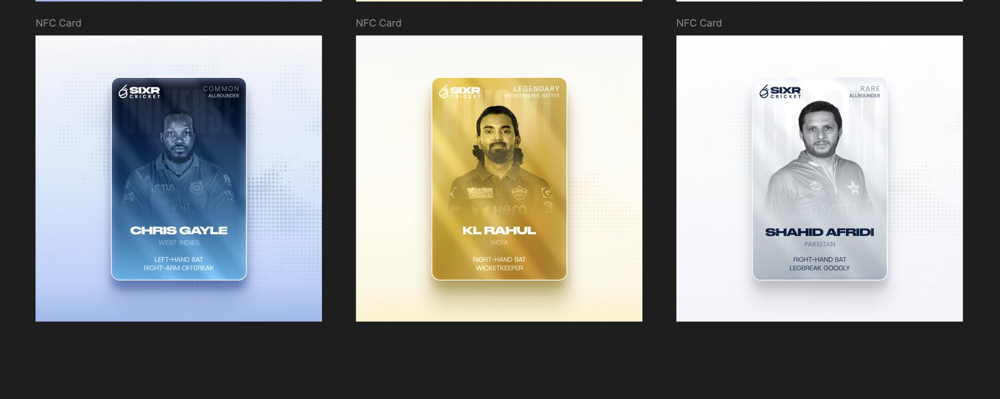
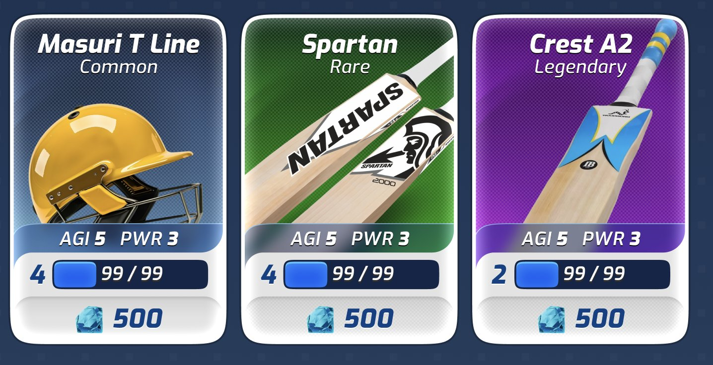
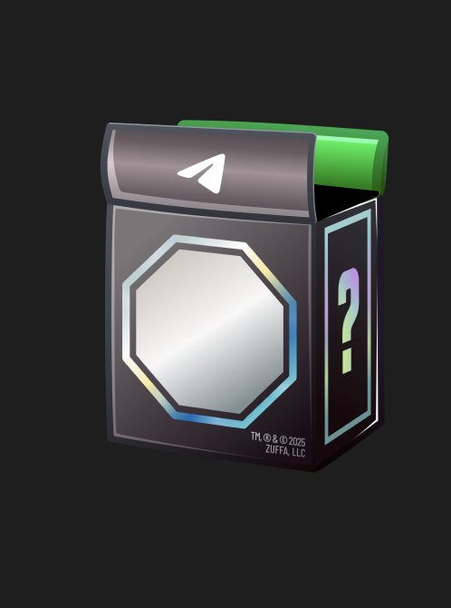
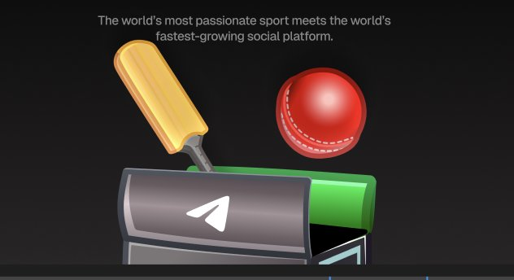
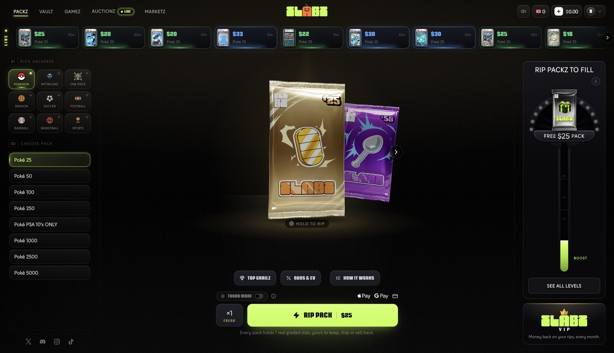
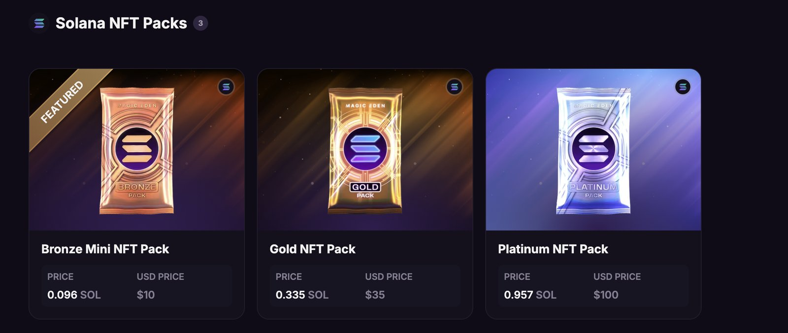

Overview
We propose building SIXR Collectibles: a branded pack-opening platform where fans buy a SIXR pack, rip it open, and reveal a cricket collectible they keep, trade or show off. It turns the SIXR game universe into something fans can own.
Each pack contains one card. That card can be:
- A cricket star in one of the game's rarities (Common, Rare, Legendary)
- A signed edition of a star card, in limited supply
- A personal video card, a short message recorded by the player
- A general collectible or in-game item drawn from the SIXR game: bats, balls, helmets and clothing
We offer two packages. Package A gets a single-pack product live fast. Package B, which we recommend, launches with three tiered packs and a full, interactive reveal experience, the format the leading pack platforms use to drive repeat purchases.
Why this format works
Digital pack platforms such as Slabz, Courtyard, Collector Crypt and Beezie have proven a simple loop: pick a pack, rip it, reveal, collect, repeat. None of them own cricket, and none have a game universe behind the cards. SIXR has both.
The platforms that perform best share three traits we build into SIXR Collectibles:
- Tiered price points. Magic Eden's Solana packs sell at roughly $10, $35 and $100. Slabz runs Pokémon packs from $25 up to $5,000. A low entry tier brings fans in; higher tiers carry scarcer, more valuable pulls.
- A single, focused dashboard. Pack selection, odds, a live feed of recent pulls and a prominent rip button on one screen keep users in the loop.
- Theatre on reveal. The opening moment is the product. Rarer pulls get bigger, longer, more distinct reveals, which is what fans share.
SIXR's edge is authenticity: real cricket stars, signed editions and personal video messages, plus items that already exist in the SIXR game.
The collectible system
Every card uses the same three rarities as the SIXR game, Common, Rare and Legendary, so the collectibles and the game read as one world. The game's visual language carries over: Common in blue, Rare in green, Legendary in purple, as on the existing Masuri, Spartan and Crest A2 item cards.
| Card type | Examples | Rarities | Supply |
|---|---|---|---|
| Cricket star | Player portrait cards (style of the existing NFC card concepts) | Common, Rare, Legendary | Open to limited |
| Signed star | Star card with a signature treatment | Legendary only | Strictly limited, numbered |
| Video message | Star card that plays a short personal video from the player | Legendary only | 1-of-1 or very low run |
| In-game item | Bats (Spartan, Crest A2), helmets, balls, clothing | Common, Rare, Legendary | Open to limited |
| General collectible | SIXR coins, gems, branded moments | Common, Rare | Open |
Signed and video cards are the "grails" that drive excitement. They sit at the top of the odds table and feature on the Top Grails screen. Final player list, odds and supply per card are set with SIXR before design starts.
The fan experience
Fans move through one simple loop: enter, pick a pack, rip it, see the reveal, and find the card in their inventory. The dashboard is the hub, modelled on the single-screen layout of Slabz, with pack types and rarities on the right and recent pulls across the top.
From any reveal, fans can rip another pack straight away or go to their inventory.
Package A — Launch: $6,500 + $3,000 of whats owed for UI/UX
Package A puts a complete, single-pack SIXR Collectibles product in fans' hands. One branded pack, one pool of 20 cards, and every core screen needed to buy, open and collect.
UI/UX design
- Splash screen and onboarding — branded entry into the platform and a short first-time walkthrough.
- Unified dashboard — one screen to navigate everything: pack selection, rarity breakdown on the right, recent pulls feed along the top, and the primary rip action.
- Pack opening animation — one rip-and-reveal sequence used for all pulls.
- Top Grails and collectibles screen — browse the headline pulls and every card in the pack's pool.
- Inventory — the user's collection, with card detail view.
Assets
- 1 SIXR-branded 3D pack
- 20 card designs across Common, Rare and Legendary
Build
- Front-end development of all screens above, responsive for desktop and mobile
Best for: validating demand quickly with a single price point.
Package B — Full Experience (recommended): $10,000 + $3,000 of whats owed for UI/UX
Package B launches SIXR Collectibles the way the leading platforms do: three packs at three price points, each richer and scarcer than the last, wrapped in a fully animated, interactive experience. It is built for repeat purchases and shareable moments.
Three tiered packs
| Pack | Positioning | Cards in pool | Contents |
|---|---|---|---|
| Common pack | Entry price, high volume | 20 | Mostly Common stars and items, chance of Rare |
| Rare pack | Mid price | 20 | Rare stars and items, chance of Legendary |
| Legendary pack | Premium, limited run | 20 | Legendary stars, signed editions, video message cards |
Pack prices are set by SIXR. A spread similar to the market, for example $10 / $35 / $100, works well.
Everything in Package A, plus
- 3 SIXR-branded 3D packs, one per tier, each with its own material and finish
- 60 card designs (20 per pack) across Common, Rare and Legendary
- Cinematic entry animation from splash into the dashboard
- Three rarity-specific reveal animations: a quick, clean Common reveal; a stronger Rare reveal; a full Legendary moment with light, sound cues and a hold-to-reveal build-up
- Interactive cards: tilt, holographic sheen and flip to see card details
- Pack switcher, odds per pack and Top Grails per pack on the dashboard
- Extended front-end build covering all three packs and reveal states
Option: 90 cards (30 per pack) — add $2,500, total $12,500.
Best for: a launch that matches the TCG platforms fans already use, with room for higher-value pulls.
Package comparison
| Package A — Launch | Package B — Full Experience | |
|---|---|---|
| Packs (3D) | 1 | 3 (Common, Rare, Legendary) |
| Card designs | 20 | 60 (90 as option) |
| Splash, onboarding, dashboard, Top Grails, inventory | Yes | Yes, per-pack views |
| Entry animation into the dashboard | — | Cinematic |
| Reveal animations | 1 shared | 3, one per rarity |
| Interactive cards (tilt, sheen, flip) | — | Yes |
| Front-end build | Yes | Yes, extended |
| Estimated timeline | 4–5 weeks | 7–8 weeks |
| Price | $6,500 | $10,000 ($12,500 with 90 cards) |
| Outstanding game UI/UX balance | + $3,000 | + $3,000 |
| Total due | $9,500 | $13,000 ($15,500 with 90 cards) |
Timeline and payment
Both packages run in the same four phases; Package B spends longer on assets and animation.
- Discovery and card list — agree players, items, rarities, odds and supply (week 1).
- UI/UX design — splash, dashboard, Top Grails, inventory; review rounds with SIXR.
- Assets and motion — 3D packs, card designs, reveal animations.
- Front-end build and handover — implementation, QA on desktop and mobile, delivery.
Payment terms
- The outstanding $3,000 from the SIXR game UI/UX contract is settled together with the deposit.
- Package A: 50% to start, 50% on delivery.
- Package B: 40% to start, 30% at design sign-off, 30% on delivery.
Scope notes and next steps
Not included (quoted separately if needed): backend and database, payments and checkout, wallet or blockchain minting, odds and randomisation logic on the server, hosting, player licensing, and filming or editing of video messages. The front end connects to APIs provided by SIXR or runs on mock data until those are ready.
SIXR provides: player photography and rights, signatures and video footage, final card list with odds, and pack pricing.
Includes: two revision rounds per design phase, source files for all screens and assets.
Next steps
- SIXR chooses Package A or B (and 60 or 90 cards)
- Confirm platform: web app, Telegram Mini App or in-game
- Settle the $3,000 balance with the deposit
- Kick-off call to lock the card list
References
The visuals and platforms below set the direction for SIXR Collectibles.
Card direction
SIXR NFC card concepts in three rarities, with player portrait, nation and playing role. These set the look for the cricket star cards.

SIXR game item cards (Common, Rare, Legendary). These set the rarity colours and the style for in-game item collectibles.

Pack direction
A stylised 3D mystery pack with holographic edging and a lid, and a cricket version with bat and ball bursting out. These set the tone for the SIXR 3D pack.


Platform and dashboard direction
Slabz: one dashboard with pack categories on the left, the pack in the centre, a live feed of recent pulls on top and a rewards meter on the right. This is the model for the SIXR dashboard.

Magic Eden Packs: three tiers at three price points (Bronze, Gold, Platinum), each pack more premium than the last. This is the model for Package B's tiers.

Links
| Reference | What to look at |
|---|---|
| SIXR on X | Brand, audience and tone |
| SIXR game, Figma | Item cards, rarities, reveal screens, store |
| Slabz | Single-screen dashboard, live pulls feed, hold-to-rip |
| Magic Eden Packs | Tiered packs at rising price points |
| Courtyard | Digital packs from $25 Starter to $1,000 Diamond, instant buyback |
| Collector Crypt | Gacha packs on Solana, odds per pack, sell-back |
| Beezie | Claw-machine pulls with posted odds, points and raffles |